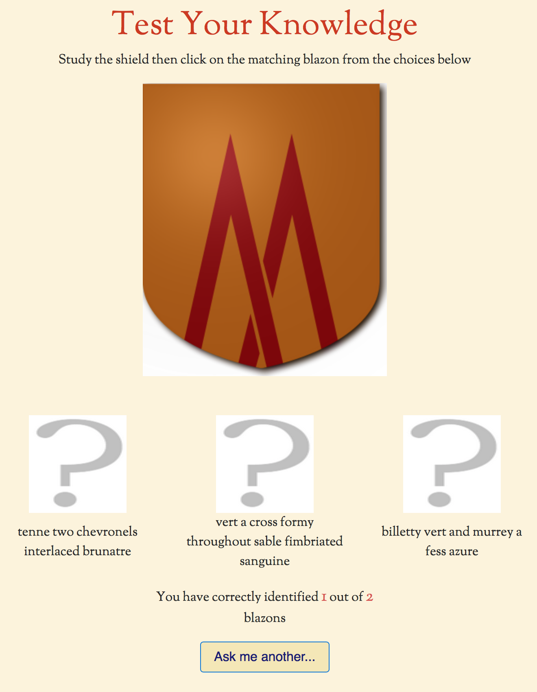

Available under the "Learn" drop-down menu at the top of every screen is a page titled "Test Your Knowledge". This is a simple, but sometimes quite challenging quiz. A randomly chosen shield design will be displayed, along with 3 similar blazons. Click on the question mark above which of the blazons you think is the correct description. If you are correct you will see a green tick mark and your score, shown at the bottom will go up! You can try again but you only score a point for a correct identification the first time. Click on the "Ask me another" button to go to the next question. If you want to restart the counter from zero then just refresh the page.
And don't forget that there is another type of quiz in the cards shown at the side of every page (or the bottom on mobile devices). This just asks a simple question about blazon terms and you can see the answer by clicking the "Reveal" button. Clicking the button again will bring up another question.